Windsurfing handbook · Part 1 of 3
Before you sail
Get ready for your session, learn how the club works, and know how to get back.
Open a section to read or practice a topic.
Getting started at CSCFind lessons, join the club, and plan your first session.
Welcome to windsurfing at Cal Sailing Club. Use this handbook alongside your lessons and on-water practice.
Start with the club’s current information
Prepare for your visit
Check the club’s opening times and the sailing area for your rating. Follow the Day Leader’s instructions for the session.
Use the handbook as you learn
Begin with the parts of the rig and wind and direction. Then follow the practical skills in order, returning to the topics you want to practice.
The club runs through volunteer contributions. See Volunteering opportunities for ways to participate.
Ratings and sailing areasCheck current requirements and the boundaries for your rating.
Use the club’s existing pages for rating requirements, authorized equipment, and sailing boundaries.
Check the Day Leader’s restrictions before going out. Conditions may limit the equipment or area available for a session.
Safety and asking for helpPrepare for cold water and recognize when you need help.
Safety equipment and warmth
It is a good idea to carry safety equipment with you while windsurfing. A good quality wetsuit will be well worth the investment as the bay can be very cold and hypothermia can set in a matter of minutes. Many windsurfers carry a length of rope to make on the water repairs, and as your rating advances, you may think it valuable to carry a small whistle or perhaps even a waterproof flare.
If you cannot sail upwind
When you first start to windsurf it is common to get blown downwind. If you find yourself in this predicament, and get carried down to the third dock (the edge of the Inner Area for Novice Windsurfers), you should try to get to that dock and land, so you can carry your rig and board back up to CSC.
It is easier to carry your board home on land than swim your board back to the dock against the wind in the water. Also, if the tide is low, it's usually easier to walk your board home in the water than swim it home. If all else fails, and you need a rescue from the skiff, sit on the board and wave your hands in the air to signal for help.
One last hint that will save lots of energy. If you are beginning to be over powered, let go with your back hand and try never to let go with your front hand. If you let go with your front hand, the sail will drop in the water and you will have to uphaul the sail – ug!
Checking equipment out and back inChoose your equipment, sign out by tablet or phone, and complete your return.
Sign out your equipment before going on the water, and complete the return as soon as you are back ashore. You can use a clubhouse tablet or your own phone.
1. Choose and check your equipment
Select your board and sail, and note the ID on each one. If you plan to use a clubhouse tablet, remember the IDs or take a photo of them before leaving the yard. With your phone, you can sign out while you are still beside the equipment.
You are responsible for all equipment you sign out. If you take over a sail that someone else has already rigged, check it for damage and make sure it is rigged correctly before taking it out.

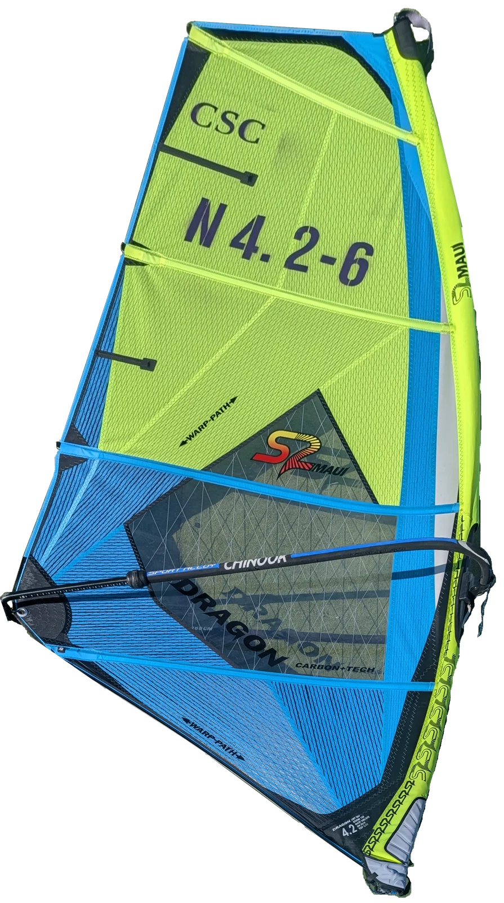

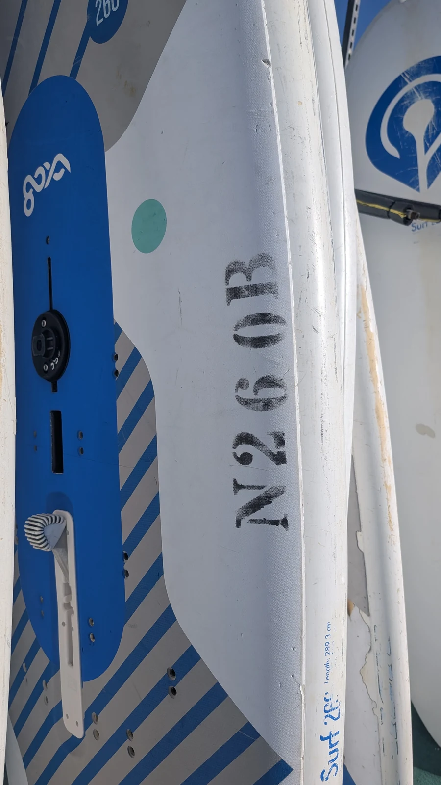
Tap or click any photo to see it at full size.
2. Sign out before you sail
Using a clubhouse tablet
-
Select Windsurf Signout on the tablet’s Equipment Signout screen.
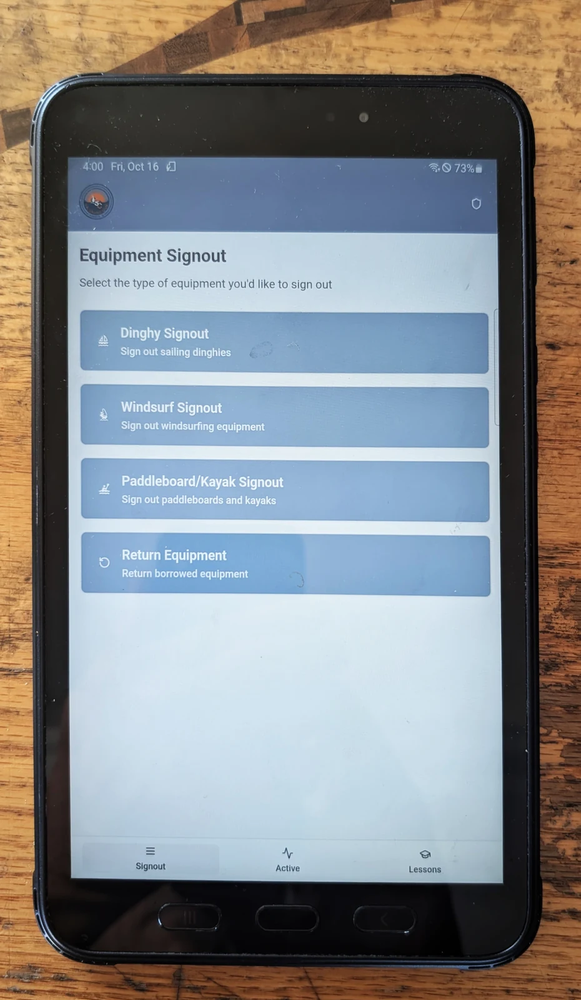
Choose Windsurf Signout. -
Enter your Member ID, then select or enter the Board ID and Sail ID.
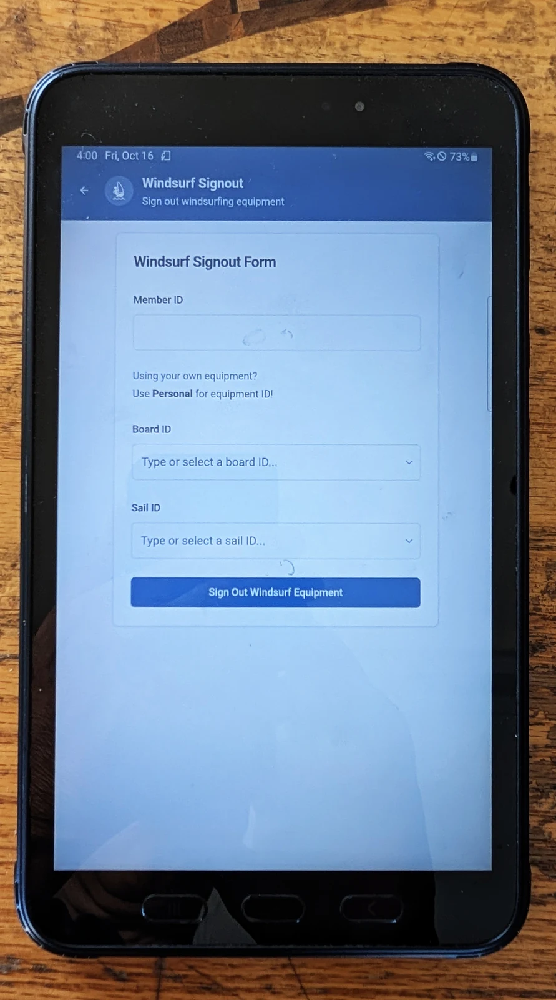
Use your own member ID and the IDs on your selected equipment. -
Check the details, then press Sign Out Windsurf Equipment to finish.
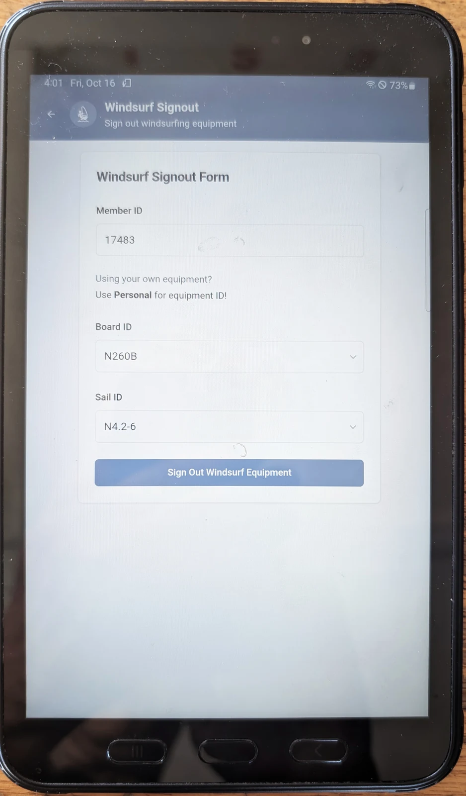
Submit the form before taking the equipment out.


Using your phone
You must be at the club, logged in, and have location access enabled to sign out equipment on your phone. Allow the site to use your location when prompted.
-
On the CSC website, open the menu and choose Resources → Signout.
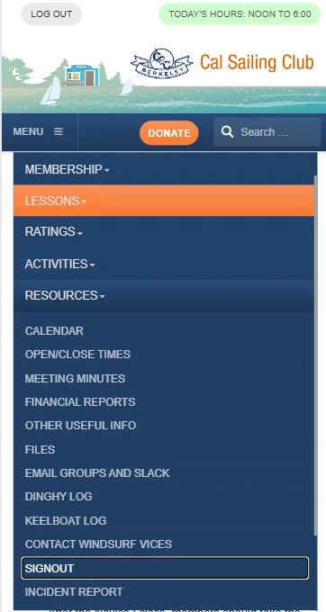
Find Signout under Resources. -
If the Equipment Management System asks you to sign in, enter your username and password and press Sign In.
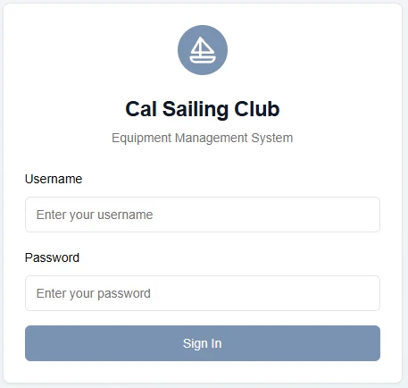
Sign in to reach the equipment screens.


Once you are in, follow the same tablet steps above: choose Windsurf Signout, enter your member and equipment IDs, and press Sign Out Windsurf Equipment.
For quicker access next time, add the signout page to your phone’s home screen using your browser’s Install or Add to Home Screen option.
3. Return the equipment and sign back in
Always complete the return when you come ashore. This is your sign-in: it lets the Day Leader know you have returned safely and are no longer out on the water.
-
On a clubhouse tablet or your phone, choose Return Equipment. Enter your Member ID and press Return Equipment.
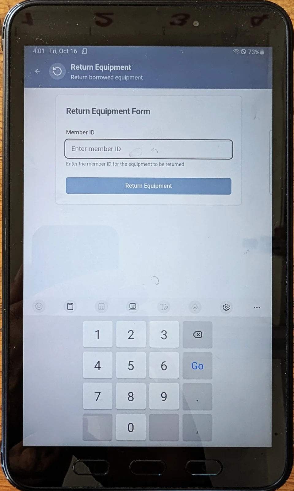
Start the return with your member ID. -
Report any damage or problems using Report Issues. If there is no damage or issue to report, press No Damage - Complete Return.
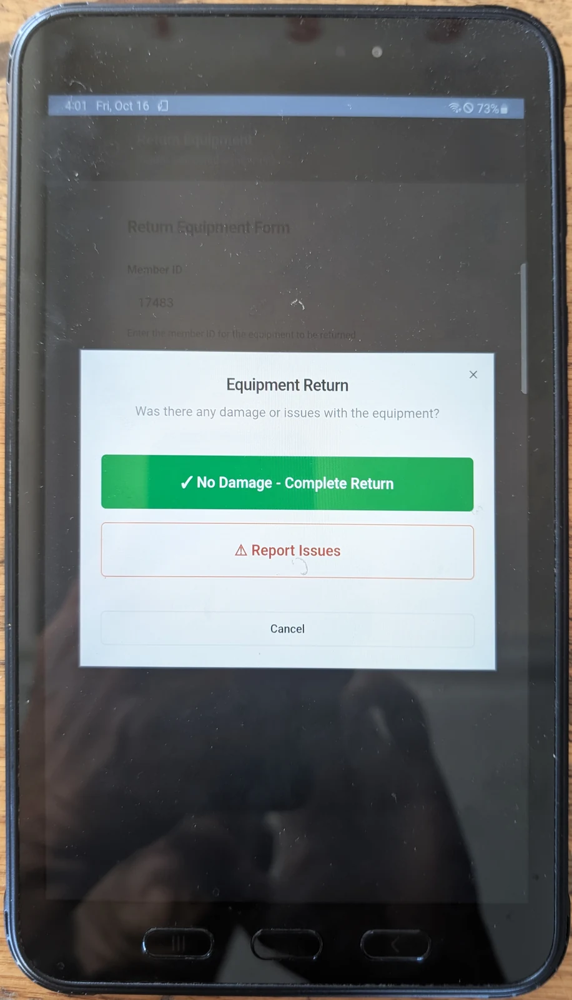
Report problems before completing the return.


Finally, check the Active Equipment Signouts monitor in the clubhouse. Make sure your name has disappeared from the active windsurf signouts. If it is still listed, check that your return went through and ask the Day Leader for help if needed.

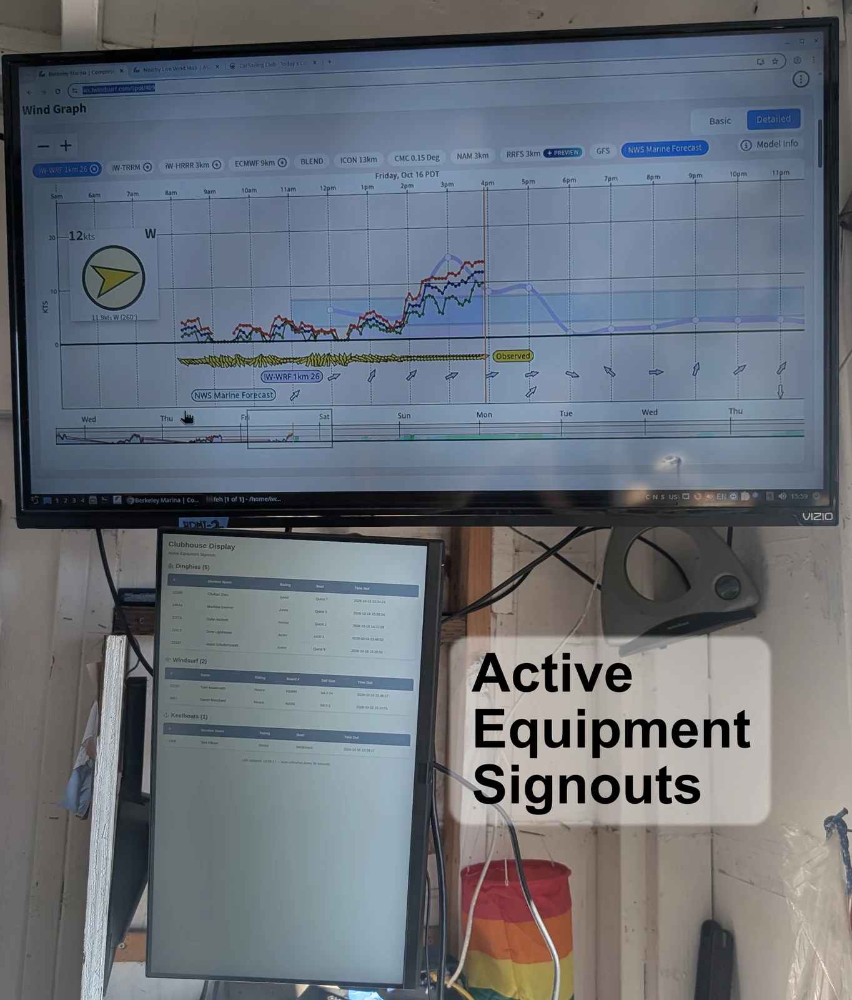
Club hours and equipment use
Check Club opening and closing times and follow the Day Leader’s instructions for the session.
The club has an ample stock of equipment, so there is no time limit on equipment use. Plan your session around the club’s opening and closing times.
Launching and landingHandle the board and rig at the dock.
After checking out your equipment and changing into your wet suit, first carry your board and place it on the windward side of the dock, fin over the edge. Then get your sail. Always launch and return to the downwind side of the dock (same side as the sailboats are tied up on). Never launch from the upwind side of the dock. Never leave your sail on the dock unattended, even for a few minutes. It is courteous to try to leave the end of the dock for short board sailors.
Return to the downwind side of the dock. Pull your board and rig on the dock. Move the board over to the upwindside of the dock. Return your sail to the sail locker. Rinse it off if it’s muddy. Do not leave a sail unattended by the hose (near the boat hoist).
Don’t forget to check your equipment.

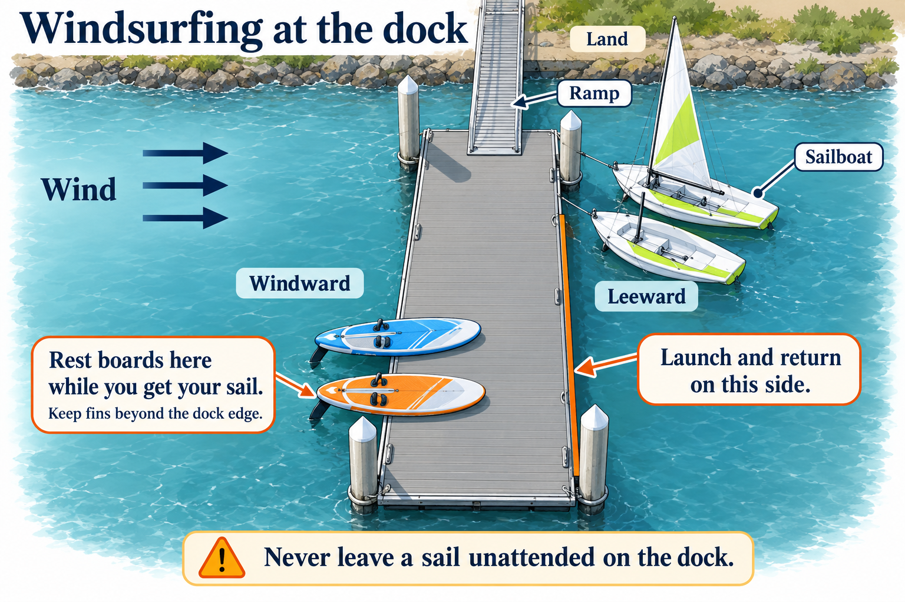
Self-rescue and getting backKnow how to return when sailing is no longer working.
As a beginning windsurfer you may find that you have trouble making your board move in the direction that you want it to.
Indeed, at some point you will probably find yourself drifting out of the Inner Area (the area that Novices are restricted to). If you are getting blown downwind past the third dock, you should paddle to the third dock and carry your equipment back. Usually at this point downwind, further attempts at sailing upwind will only exhaust you and make it more difficult to get back. Even if you can’t make it to the third dock, you should paddle to the shore adjacent to the dock (or to the access road to the Marina). Do not let yourself get blown down to the rocks at the east end, by the frontage road near the freeway. It is very difficult to spot sailors in trouble in that area and the result can be dangerous.
Sailing in the novice area will not be the only time that you will need to know how to self-rescue (paddle) on a windsurfer. Even as a Junior or Senior with improved sailing skills, you may be forced to swim the equipment back if something breaks while you are on the water. For these reasons, it is mandatory to know how to self-rescue.
There is some debate on the best method to self-rescue. Obviously, the method you choose will depend on the distance to travel and the current conditions. In general, if you are on a board that has a centerboard, lowering it will help you stay on course and up wind.
Suggested self-rescue methods
No Wind: Balance the boom on the back of the board so the sail is out of the water, lay on the sail and board, and paddle with your arms and hands.
Some wind, short distance to travel: Let the sail drag in the water at the side of the board, lay on the board, and paddle.
The sail should trail behind the board, and the mast next to the board. This is the preferred method for your self-rescue test.
Some wind, long distance to travel (Method 1): Untie the extra downhaul line. Remove mast from universal and slide the sail onto the back of the board. The sail and half the boom should be above the board and the other half of the boom should be in the water below the board up against the fin. Tie the loose downhaul around the universal in order to keep the rig in position. Climb on top of the board lying face down and paddle.
Some wind, long distance to travel (Method 2): Derig sail, roll it up and tie it to the boom. Lash the boom, mast and sail together (mast still attached to the board), lay on the board and paddle.
Extremely high wind, life and safety in danger: Jettison the rig, lay on board and paddle. Never leave your board, it is your life raft.
Novice study checklistUse the original questions to identify topics to review.
These are the study questions from the 2009 handbook. This draft is a reading checklist; use the current ratings page for test requirements.
- Under what conditions can Novices go windsurfing.
- What must you do to become a novice windsurfer at Cal Sailing Club
- How should your sail be oriented in relation to the wind to carry your sail?
- When do Novice Windsurfers have to wear a life jacket?
- How should a rigged sail look as far as the relation between the middle batten and the mast?
- What is the time limit on use of equipment when there is no other equipment of that type available for other club members to use?
- If you have trouble windsurfing, and find yourself being drifting out of the Inner Area, past the third dock (the easternmost dock), what is the best thing to try first?
- When you carry your board to the dock, where’s the best place to leave your board while you get your sail?
- Where is the best place to enter and leave the water when windsurfing?
- When you are not sailing, where is the best place to leave your sail?
- In extremely high wind, if nothing else works, what should you do to self-rescue?
- What windsurfer equipment can novice windsurfers use?
- If equipment you’ve signed out breaks, what should you do?
- When you’ve finished windsurfing, what should you do?
- Where are novice windsurfers allowed to sail?
- What is the minimum work requirement for CSC members?
Based on the CSC handbook revised April 2009. The 10-Step Guide is by Bill Prinzmetal; the source’s 2007 revision credits photographs by Rob Weinberg. Original artwork is retained during the 2026 review.